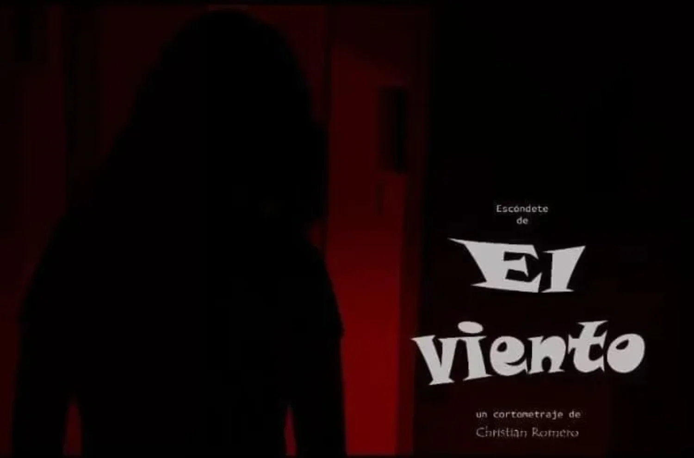
2022
Ver cortometraje ↗El viento
Cortometraje · Dirección: Christian Romero
Cine
Carteles y fotogramas originales. Pulsa el título de una obra para verla en YouTube cuando esté disponible. Se conservan los créditos históricos de Christian Romero.

Cortometraje · Dirección: Christian Romero
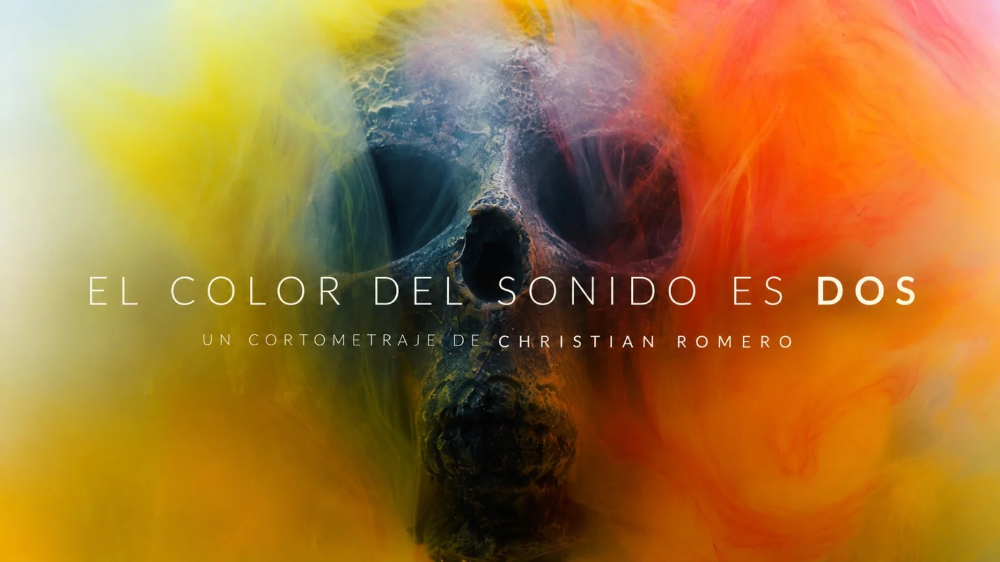
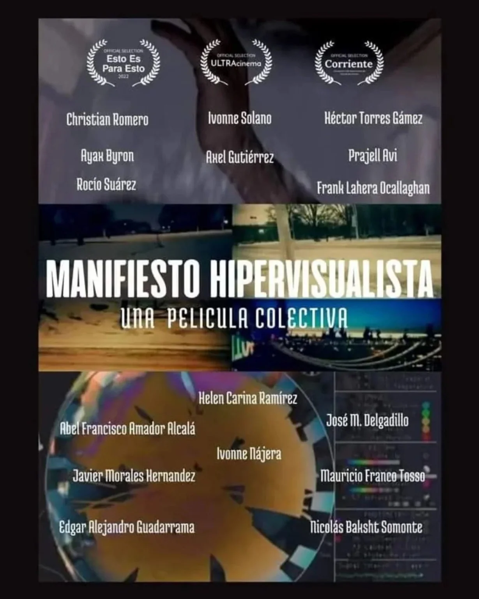
Película colectiva · Participación en un segmento: Christian Romero
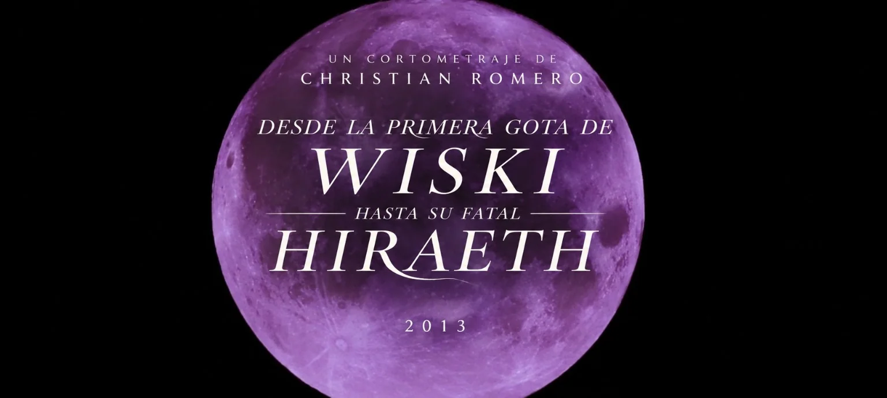
Cortometraje · Homenaje a Dylan Thomas · Christian Romero
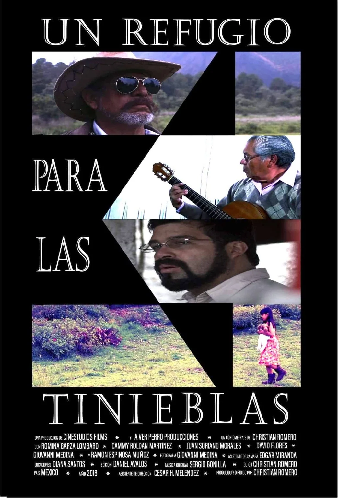
Cortometraje · Producción y dirección: Christian Romero
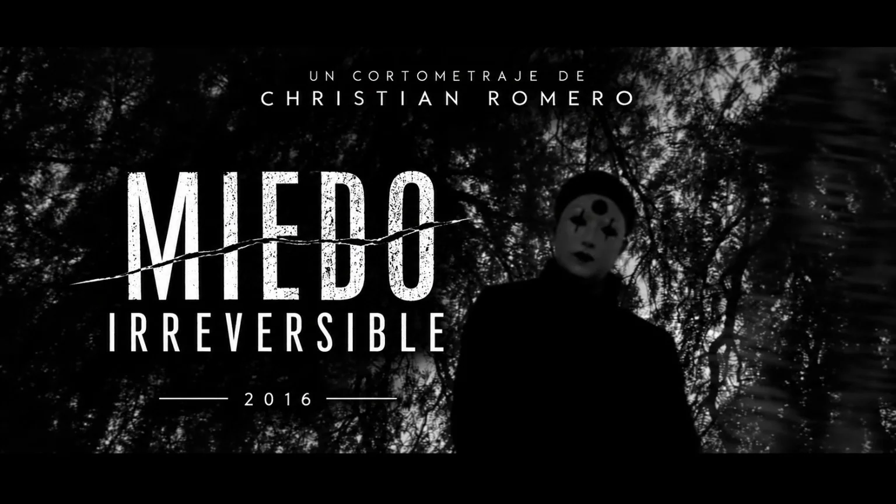
Cortometraje · Christian Romero
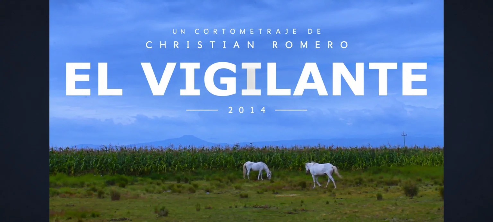
Cortometraje · Christian Romero
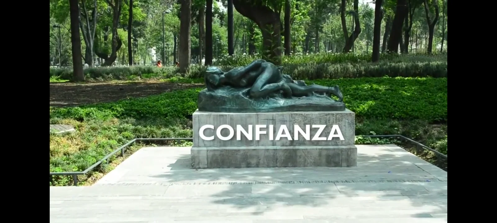
Dirección de fotografía: Christian Romero
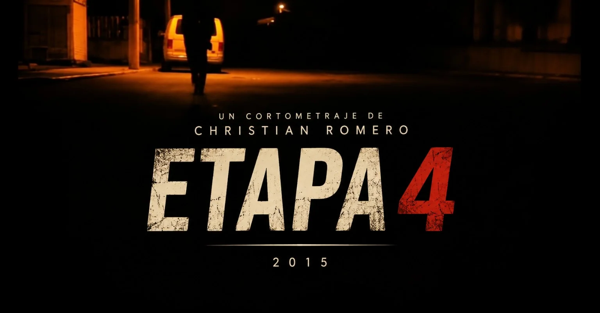
Cortometraje experimental · Christian Romero
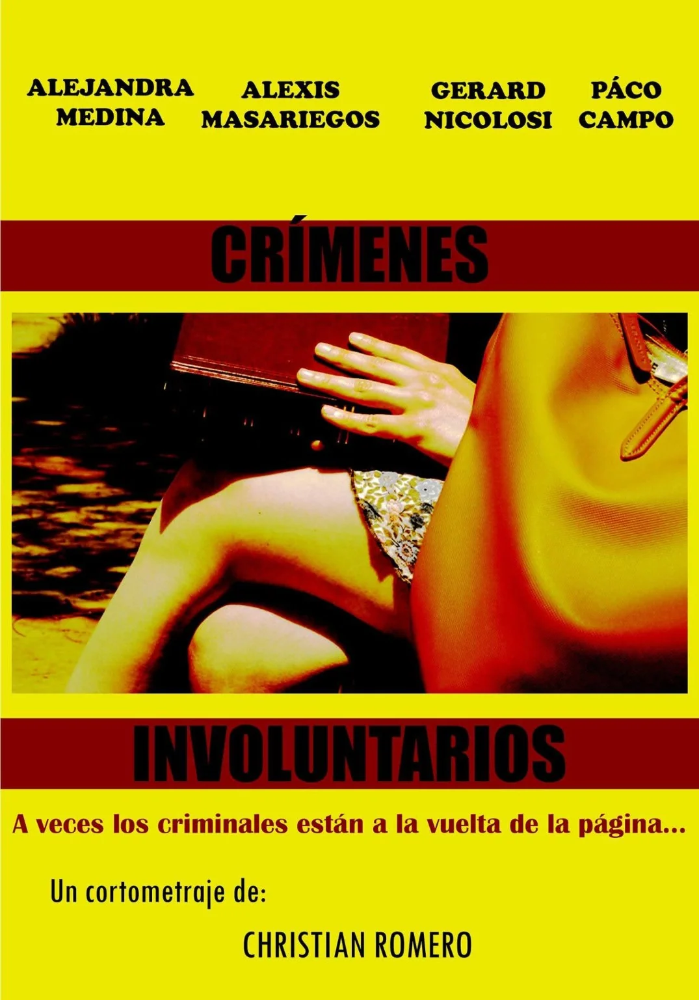
Cortometraje · Dirección: Christian Romero
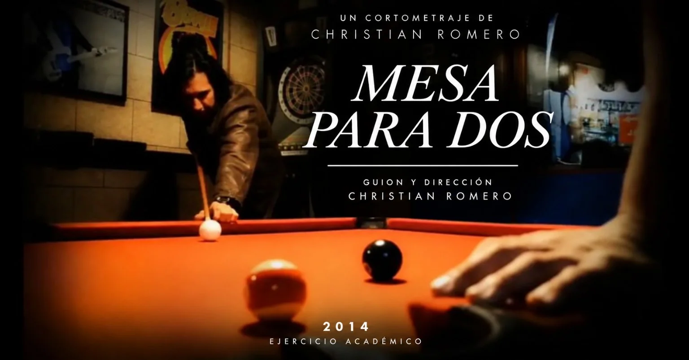
Ejercicio académico · Guion y dirección: Christian Romero
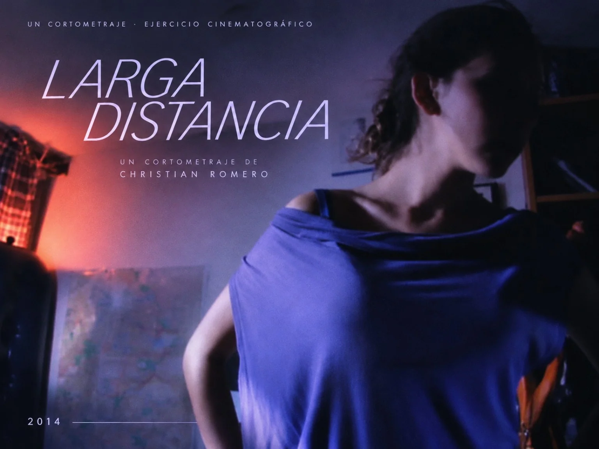
Ejercicio cinematográfico · Dirección: Christian Romero
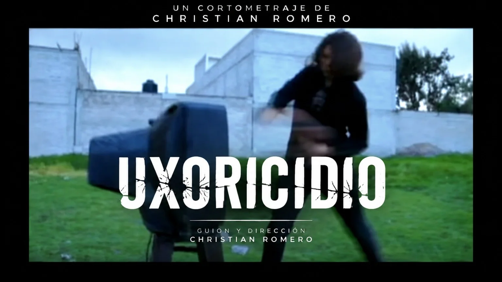
Guion y dirección: Christian Romero
2014
Enlace audiovisual proporcionado por el autor.
Ver cortometraje ↗